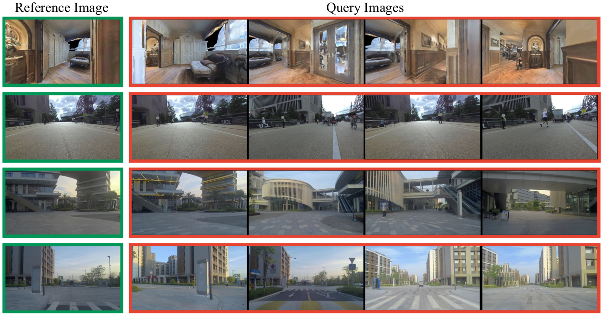
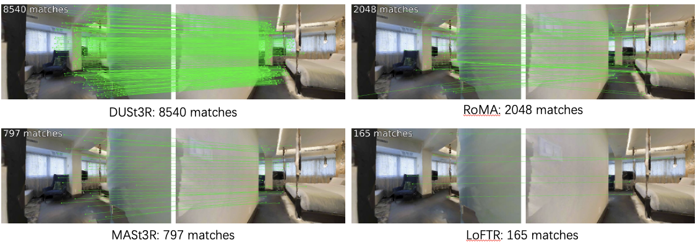
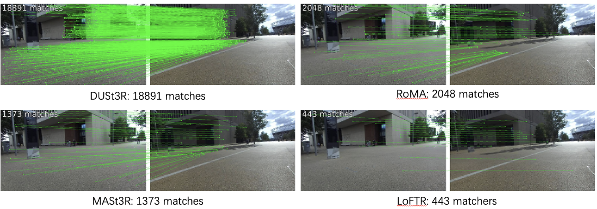
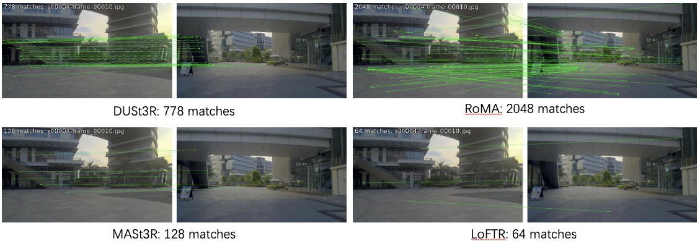
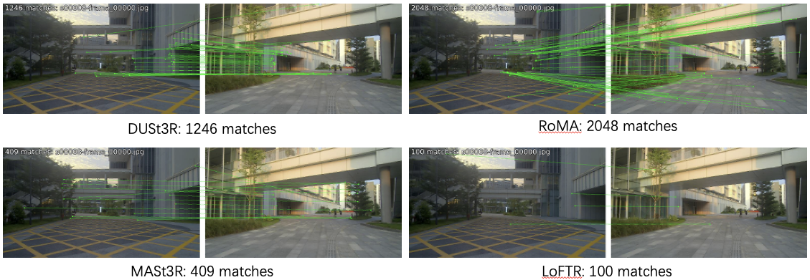
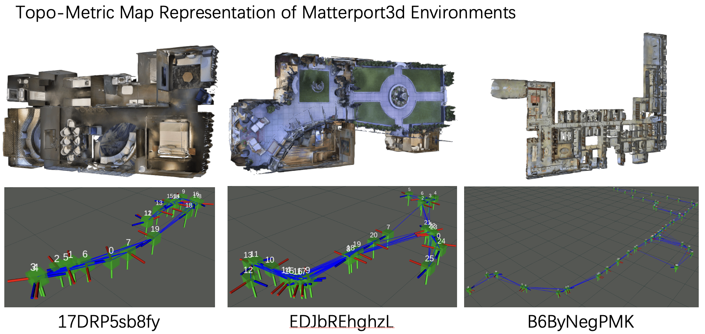
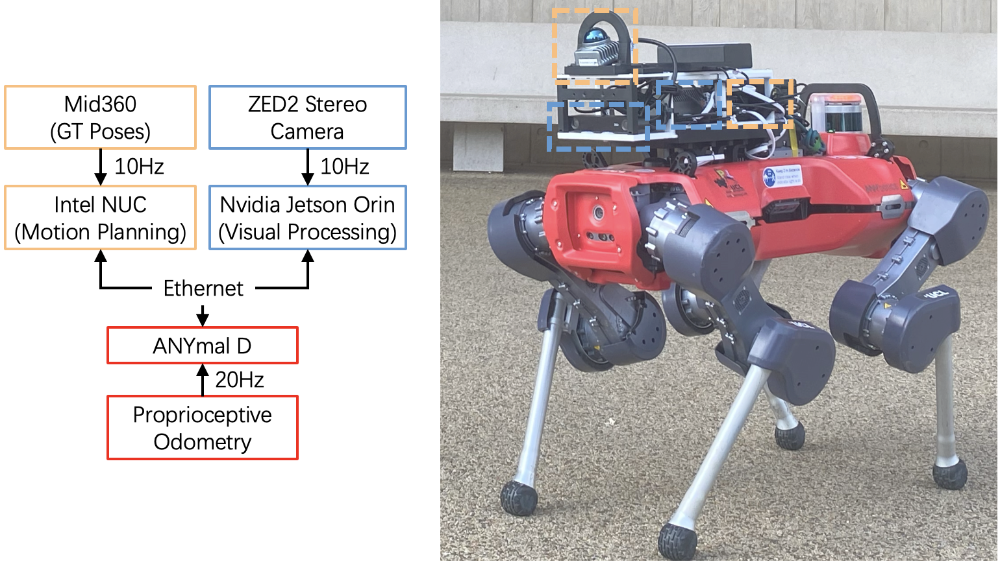
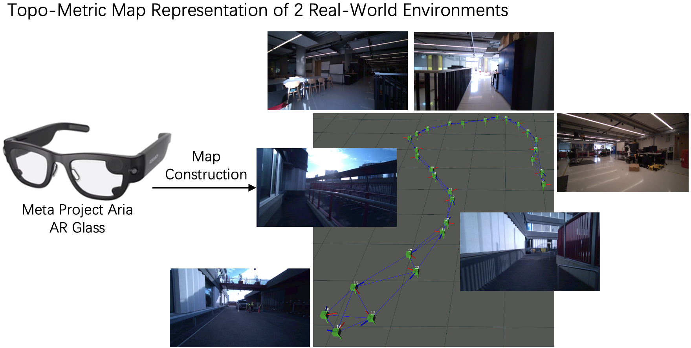
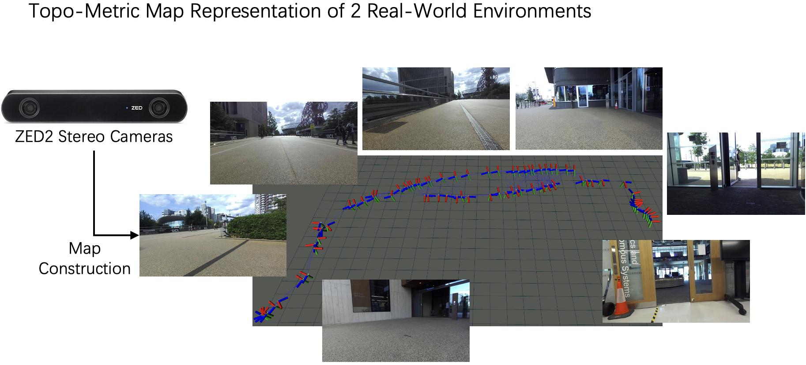

LiteVLoc: Map-Lite Visual Localization for
Image Goal Navigation
Abstract
This paper presents LiteVLoc, a hierarchical visual localization framework that uses a lightweight topo-metric map to represent the environment. The method consists of three sequential modules that estimate camera poses in a coarse-to-fine manner. Unlike mainstream approaches relying on detailed 3D representations, LiteVLoc reduces storage overhead by leveraging learning-based feature matching and geometric solvers for metric pose estimation. A novel dataset for the map-free relocalization task is also introduced. Extensive experiments including localization and navigation in both simulated and real-world scenarios have validate the system's performance and demonstrated its precision and efficiency for large- scale deployment.
Evaluation on the Dataset for Map-Free Relocalization
We evaluate 13 state-of-the-art image matching methods under severe
viewpoint changes, occlusions, and lighting variations. This will serve as
an important experiment for our work.
More results can be found in the paper and this page.





Visual Localization and Navigation on Simulated Environments
Visual Localization and Navigation on Real-World Environments
Real-World Deployment
Environment 0 (Small Scale)
Environment 1 (Larger Scale)
Snippets
Manual Intervention
Obstacle Avoidance
Collision Because the Camera Cannot Recover Depth of Short-Distance Obstacles
BibTeX
@article{jiao2024litevloc,
title = {LiteVLoc: Map-Lite Visual Localization for Image Goal Navigation},
author = {Jianhao Jiao, Jinhao He, Changkun Liu, Sebastian Aegidius, Xiangcheng Hu, Tristan Braud, Dimitrios Kanoulas},
journal = {arXiv preprint arXiv:xx},
year = {2024}
}